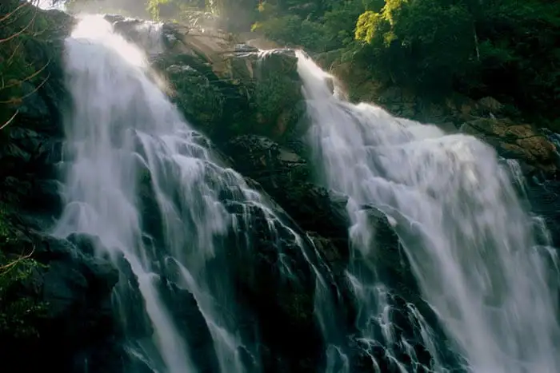
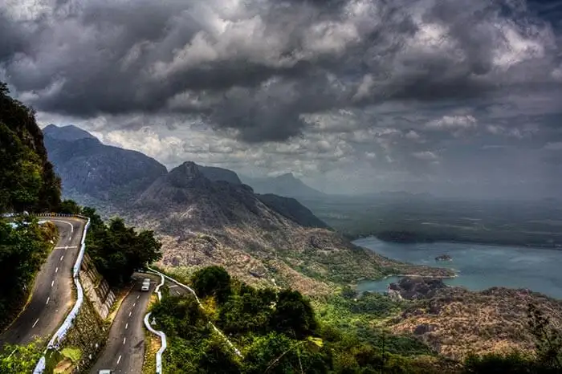

Wayanad District came into existence on 1st November, 1980 as the 12th District of Kerala consisting of Mananthavady, Sulthanbathery and Vythiri Taluks. The name Wayanad is derived from Vayal Nadu which means the land of paddy fields. It is a picturesque plateau situated at a height between 700 meters and 2100 meters above the mean sea level nested among the mountains of the Western Ghats on the Eastern portion of North Kerala and on the sides of Tamil Nadu and Karnataka States. The District was carved out from the then Kozhikode and Kannur Districts. About 885.92 sq.km of area is under forest. The culture of Wayanad is mainly tribal oriented. Though considered as backward, this District is perhaps one of the biggest foreign exchange earners of the State, with its production of cash crops like pepper,cardamom, coffee, tea, spices and other condiments.
Places To Visit In Wayanad
Meenmutty Waterfalls

Meenmutty derives its name from ‘Meen’ that means fish and ‘Muty’ that means blocked which means blocking the fishes. One of the most splendid Wayanad tourist places, this is amongst the best waterfalls in Kerala. It is located on the Ooty road at a height of 300 meters and, if in Kalpetta then this Wayanad destination is just 29 kilometers. If you are looking for the best waterfalls in Kerala then this should not be missed from your travel list.
Chembra Peak
The Chembra peak is the highest peak in Wayanad and is located at a height of 2100 meters above the sea level. It is the best tourist place for nature lovers to adore its beauty and offers bewildering treks for adventurous souls. The peak is visible from almost all parts of Wayanad and the major attraction is the natural heart-shaped lake atop the hill. You can take a glimpse of Kozhikode, Nilgiris and Malappuram districts from here. This unique lake makes Chembra Peak one of the best tourist places in Wayanad.
Ghat View Point

The adventurous spot in Wayanad is around 700 meters above sea level. Ghati viewpoint is nested at Lakkidi which has 9 hairpin curves within 16 kilometers. It gives an eyeshot of great steep, misty mountains and a glance of Arabian Sea. You can enjoy the sunset at this famous Wayanad sightseeing in the evening with your beloved.